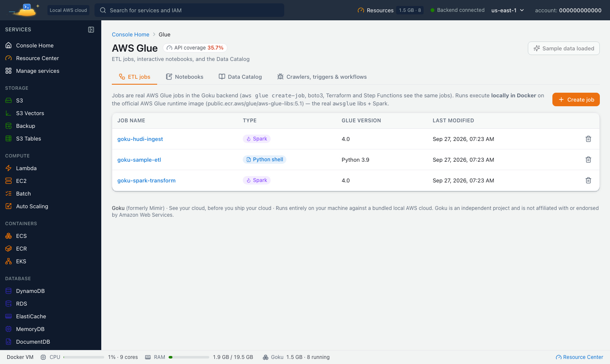
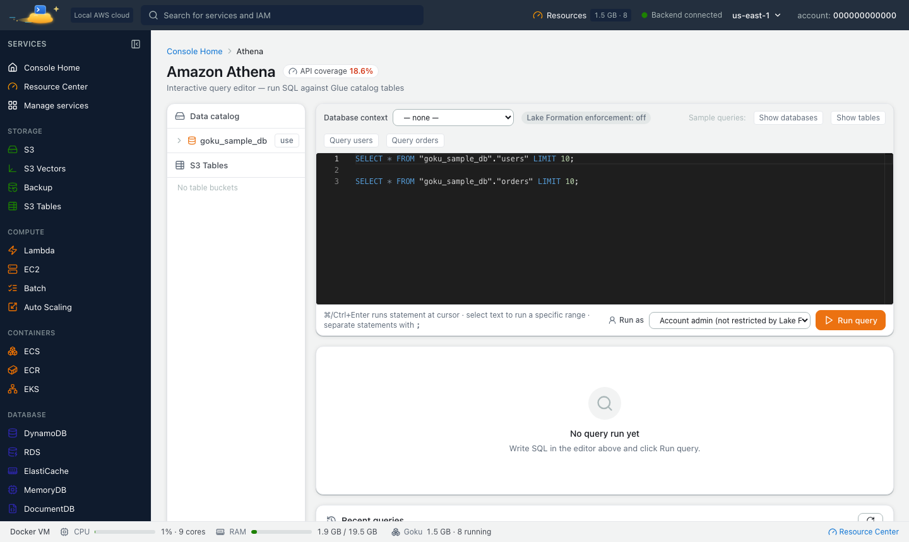

Waiting for a cloud job run to find a typo in a Glue script is a slow way to work. Goku, a free local AWS emulator, runs Glue code on your machine: ETL jobs and interactive notebooks on real Spark with the real awsglue libraries (GlueContext, DynamicFrame, Job), against a local Data Catalog and local S3.
Goku was formerly called Mimir. Same product, new name: the image is now tanujsoni027/goku (it was tanujsoni027/mimir-aws) and the command is goku. See old and new names.
On this page: Glue versions · Start · Run a job · Console and notebooks · Data Catalog and Athena · Libraries and formats · Differences · FAQ
Pick the Glue version per job or per notebook, as in the AWS console. Every run happens in Docker on a real Glue runtime:
| Glue version | Spark | Python | Java | Runtime image |
|---|---|---|---|---|
| 6.0 | 4.1.1 | 3.13 | 17 | Built locally on first use |
| 5.1 (default) | 3.5.6 | 3.11 | 17 | AWS's published image |
| 5.0 | 3.5.4 | 3.11 | 17 | AWS's published image |
| 4.0 | 3.3.0 | 3.10 | 8 | AWS's published image |
| 3.0 / 2.0 | 3.1.1 / 2.4.3 | 3.7 | 8 / – | AWS's published images |
New jobs default to 5.1, which is what AWS uses for jobs created without a Glue version. The published images are pulled the first time you use a version, and they are large (5 to 7 GB each), so the first run takes a while. AWS publishes no Glue 6.0 image, so the first 6.0 job or notebook builds one from the official Glue 6.0 pieces. It downloads about 1 GB and takes roughly 3 minutes on a fast connection, and it only happens once.
Glue 6.0 behaves like Glue 6.0 on AWS: ANSI SQL mode is on, Python is 3.13, --extra-jars must be built for Scala 2.13, and getResolvedOptions rejects abbreviated argument names.
Install the goku CLI (see Install) and start Goku. The CLI mounts the Docker socket and the /tmp/goku-glue work folder that Glue runs need. Glue and Athena are not part of the core services, so subscribe to them once:
$ goku start
goku services subscribe glue athena
eval "$(goku env)"
You can also subscribe on the console's Services page, where the Data & analytics preset turns on Glue, Athena and related services together.
Jobs in Goku are real Glue resources, so the AWS CLI, boto3, Terraform and Step Functions all see the same jobs and runs. Start with a small CSV file in local S3:
$ aws s3 mb s3://my-bucket
printf 'customer,amount\nalice,20\nbob,5\nalice,7\n' > orders.csv
aws s3 cp orders.csv s3://my-bucket/raw/orders/orders.csv
Then a Glue script that totals the amounts per customer and writes Parquet back to S3:
import sys
from pyspark.context import SparkContext
from awsglue.context import GlueContext
from awsglue.job import Job
from awsglue.utils import getResolvedOptions
args = getResolvedOptions(sys.argv, ["JOB_NAME"])
glue_context = GlueContext(SparkContext.getOrCreate())
spark = glue_context.spark_session
job = Job(glue_context)
job.init(args["JOB_NAME"], args)
orders = spark.read.option("header", True).option("inferSchema", True).csv("s3://my-bucket/raw/orders/")
totals = orders.groupBy("customer").sum("amount").withColumnRenamed("sum(amount)", "total")
totals.show()
totals.write.mode("overwrite").parquet("s3://my-bucket/curated/totals/")
job.commit()Upload the script, create the job and run it. The run log goes to CloudWatch Logs, as on AWS:
$ aws s3 cp etl.py s3://my-bucket/scripts/etl.py
aws glue create-job --name etl --role GlueRole --glue-version 5.1 \
--command Name=glueetl,ScriptLocation=s3://my-bucket/scripts/etl.py \
--worker-type G.1X --number-of-workers 2
RUN=$(aws glue start-job-run --job-name etl --query JobRunId --output text)
aws glue get-job-run --job-name etl --run-id $RUN --query JobRun.JobRunState
aws logs get-log-events --log-group-name /aws-glue/jobs/output --log-stream-name $RUN
aws s3 ls s3://my-bucket/curated/totals/
Run get-job-run again until the state is SUCCEEDED. The run goes through STARTING (where the image pull or the 6.0 build shows), then RUNNING. Errors land in /aws-glue/jobs/error. To try Glue 6.0, create the job with --glue-version 6.0.
Open Glue in the console at http://localhost:8080. Under ETL jobs, Create job gives you a script editor, the Glue version picker, job parameters and run history with live logs. Under Notebooks, a new notebook starts an interactive session with a live, stateful kernel where spark and sc are already defined, which is the fastest way to explore data before writing a job.

Goku emulates the Glue Data Catalog: databases, tables and partitions. Create them with the AWS CLI, or point a crawler at a prefix in local S3. Crawlers classify CSV, JSON, Parquet, Avro and ORC files and turn key=value folders into partitions.
$ aws glue create-database --database-input '{"Name": "analytics"}'
aws glue create-table \
--database-name analytics \
--table-input '{
"Name": "totals",
"StorageDescriptor": {
"Location": "s3://my-bucket/curated/totals/",
"InputFormat": "org.apache.hadoop.hive.ql.io.parquet.MapredParquetInputFormat",
"SerdeInfo": {
"SerializationLibrary": "org.apache.hadoop.hive.ql.io.parquet.serde.ParquetHiveSerDe"
},
"Columns": [
{"Name": "customer", "Type": "string"},
{"Name": "total", "Type": "bigint"}
]
}
}'
With the job parameter --enable-glue-datacatalog (the console sets it for new Spark jobs, and notebooks use it by default), spark.sql("SELECT ... FROM analytics.totals"), CREATE TABLE, INSERT INTO and glue_context.create_dynamic_frame.from_catalog read and write the local catalog. Athena uses the same catalog, so you can query a job's output with SQL in the console's query editor.

ScriptLocation, --extra-py-files (modules and .whl files), --extra-jars and --extra-files are fetched at run time, and --additional-python-modules is installed with pip.--datalake-formats to hudi, delta or iceberg and Goku adds the framework jars and Spark settings for your Glue version.analytics library set.arn:aws:states:::glue:startJobRun.sync.Glue jobs and notebooks run in containers that take memory. Save Glue, S3 and Athena as a “Data day” workspace to start them together, and pause or stop the workspace when you move on to other work.
Goku is a local sandbox, so a few things behave differently:
glueray) are accepted, but their runs fail because Ray isn't available locally.Yes. Goku runs Glue jobs and notebooks in Docker on your machine against a local Data Catalog and local S3. It needs Docker, not an AWS account.
Glue 6.0, 5.1 (the default), 5.0, 4.0, 3.0 and 2.0, chosen per job or notebook. 5.1 and older use AWS's published runtime images; 6.0 is built locally the first time you use it.
The first run of a version pulls its runtime image, which is 5 to 7 GB, or for Glue 6.0 builds one once (about 1 GB to download, roughly 3 minutes on a fast connection). Later runs start straight away.
Yes. Jobs run with the real awsglue libraries from the Glue runtime, and from_catalog reads tables from Goku's local Data Catalog.
Yes. Notebooks in the console start an interactive session with a live Spark or Python kernel on the Glue version you pick.